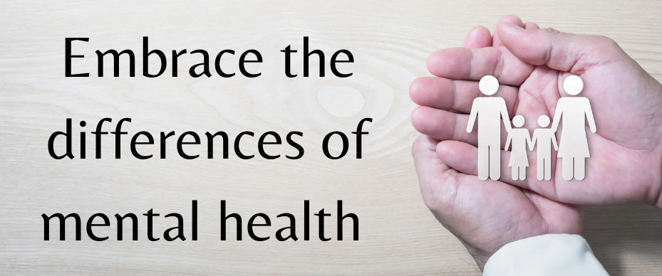

Resources Available For People With Menal Health Illnesses
Online Mental Health Resources For Youth
Go Ask Alice!: A website about emotional health. www.goaskalice.columbia.edu Girls Health.Gov: A website where girls can learn more about how to understand there feelings, recognize mental haalth illnesses, and how to talk to thier parts about it. http://girlshealth.gov/feelings/index.html Teen Mental Health: Geared towards teenagers, this website provides learning tools on a variety of mental illnesses, videos, and resources for friends. http://teenmentalhealth.org/
Apps and Tech Services
Beacon 2.0: Beacon is an application that health experts write reviews for moblie extentions and support groups for others to see in order to find good quality help. https://beacon.anu.edu.au/ Health Talk: This website in a collection of individuals experiences with mental health illnessses and modules of based research. www.healthtalk.org/peoples-experiences/mental-health Mindfulness for Teens: A website for teens to practice mindfulness and manage stress. An app is available with mediation practice exercises and recordings through the link. http://mindfulnessforteens.com/ Strength of Us: A community online for young adults affected by menal health illnesses to stay positive, strong, and have a sharing peer support resource by accessing the website. http://strengthofus.org/
Mental Health Resource Institutes
American Academy of Child and Adolescent Psychiatry: A website that provides videos, resources to recvice help, and campaigns for advocacy. www.aacap.org/AACAP/Families_and_Youth/Youth_Resources/Home.aspx National Alliance on Mental Health: Resources on managing mental health for youth and young adults. www.nami.org/Find-Support/Teens-and-Young-Adults National Institute of Mental Health: A website that gives information on a variety of mental health illnesses. www.nimh.nih.gov/health/index.shtml Substance Abuse and Mental Health Services Administration: SAMHSA websaite that gives information on treatement centers and mental health services near you. https://findtreatment.samhsa.gov/
Mental Health Medication Guides
Head Meds: A website that gives information on common medications for mental health illnessses. http://www.headmeds.org.uk/ Making Healthy Choices: A webiste geared towards foster kids about “mental health, treatment options, and the use of psychotropic medications.” www.childwelfare.gov/pubs/makinghealthychoices/
Helplines
Campaign Against Living Miserably (CALM): Visit www.thecalmzone.net or UK residents call 0800-58-58-58 Crisis Text Line: Visit www.crisistextline.org/ or Text “START” to 741-741 List of International Suicide Hotlines: Visit www.suicide.org/international-suicide-hotlines.html Love is Respect: Visit www.loveisrespect.org/, text “LOVEIS” to 22522, or call 1-866-331-9474 to talk with a peer advocate to prevent and end abusive relationships National Eating Disorder Association: Visit www.nationaleatingdisorders.org/ or call 1-800-931-2237 National Suicide Prevention Lifeline: Visit www.suicidepreventionlifeline.org/ or call 1-800-273-TALK (8255) For LGBTQ Youth: TrevorLifeline at 866-488-7386, TrevorText -Text START to 678-678
Advocacy
Active Minds: Nonprofit for college students about advocacy for mental health. http://activeminds.org/ StopBullying.Gov: A website for teens about how to prevent bullying in school and the community. Also information on how to receive help when being bullied. http://www.stopbullying.gov/ Time to Change: A website that protomes and advocactes for ending “mental health stigma and discrimination”. www.time-to-change.org.uk//